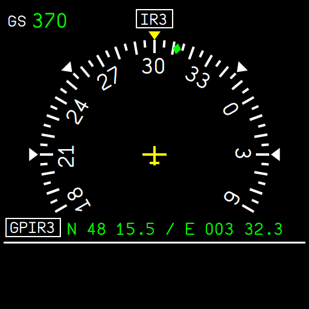
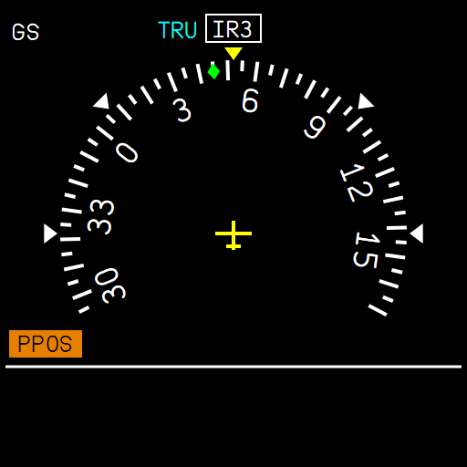
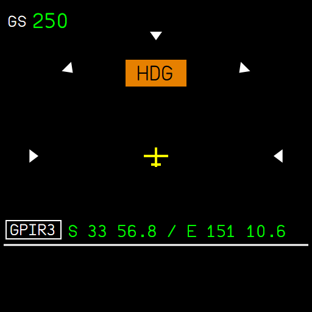
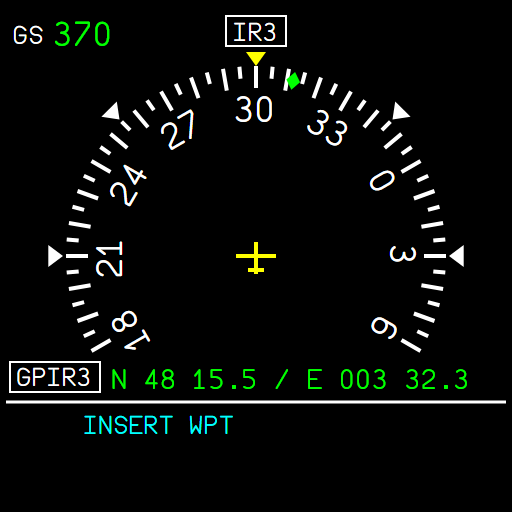
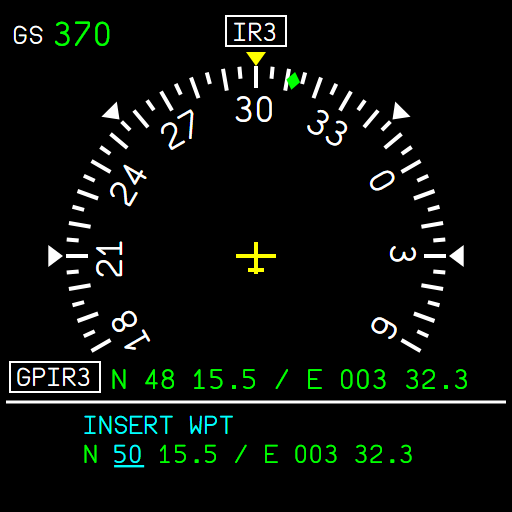
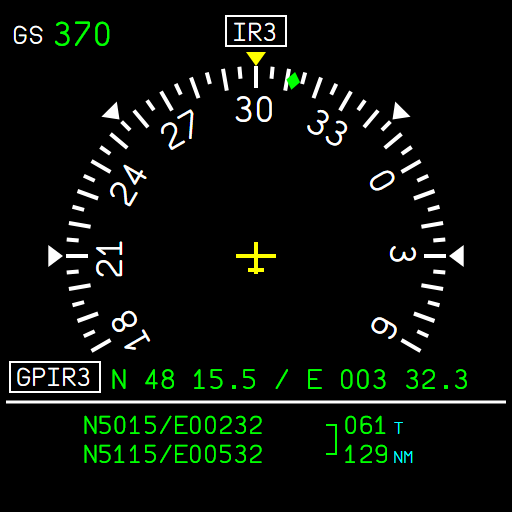
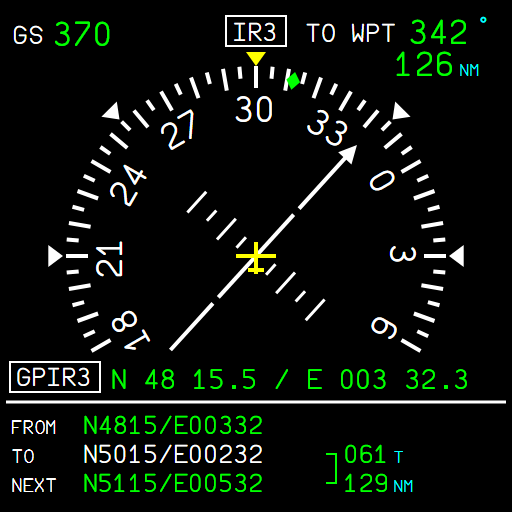
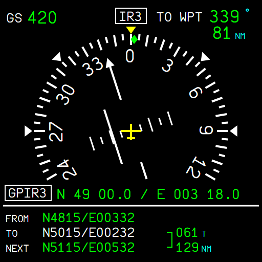
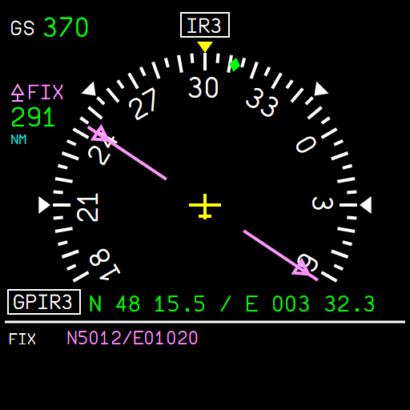
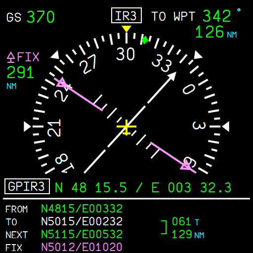

The lower ISIS as the A380 standby navigation display: heading, track, ground speed and position, a waypoint list with DIR TO, and a FIX
AircraftA380XWhere to find itCentre instrument panel, the lower ISIS (under the standby flight display)PR branchpr/31-a380x-isis-sndStatusBuilt and deployed; checked in the local browser harness against the FCOM figures; not tested in the sim yet.PicturesThe SND instrument in the local browser harness, running the build of the branch, with ADIRU data typed in (the harness has no aircraft).
1. What it is for
2. The screen
3. Buttons
4. The waypoint list
5. DIR TO and the navigation
6. The FIX
7. Limitations and why
1. What it is for
The A380 has two ISIS (integrated standby instrument systems): the upper one is the Standby Flight Display (SFD: attitude, speed, altitude), the lower one the Standby Navigation Display (SND): heading, position and a small navigation of its own, independent of the FMS (A380 FCOM DSC-34-10-20). On the FBW A380 the lower screen was black; it is now the SND.
2. The screen

Figure 1. The SND: ground speed, heading source IR3, heading rose with the yellow heading index and the green track diamond, aircraft symbol, position from ADIRU 3.
Item
Meaning
GS 370
ground speed, kt
IR3
the heading comes from ADIRU 3 (IR1 when ADIRU 3 has none); TRU in cyan in true reference
Heading rose
240° shown, a mark every 5°, numbers every 30°; white markers at 45° and 90°
Green diamond
the aircraft track
GPIR3 N 48 15.5 / E 003 32.3
the aircraft position (degrees and minutes) and its source
HDG, PPOS (amber)
heading or position not available

Figure 2. True reference (TRU), no position (PPOS), no ground speed.

Figure 3. No heading from either ADIRU: HDG replaces the rose.
3. Buttons
Button
Action
MODE
switches the SND off, and on again
+ / -
brightness
MENU
opens the menu under the white line; press again to leave it
SET/SEL knob
turn: next item or value; push: select, or go to the next field
LS/DIR TO
DIR TO (see below); press again to leave it
4. The waypoint list
The SND has its own list of waypoints, entered by coordinates (it has no database). Press MENU: the menu shows INSERT WPT, INSERT FIX, EDIT WPT / FIX and CLEAR WPT / FIX in cyan; turn the knob to choose, push to select.
MENU, then push on INSERT WPT: the coordinates show, starting from the last waypoint (or your position).
Turn the knob to change the underlined field, push to go to the next one: N/S, degrees, minutes, tenths, then E/W, degrees, minutes, tenths.
Push on the last field: the waypoint is added at the end of the list.

Figure 4. The menu: INSERT WPT.

Figure 5. Entering the coordinates: the degrees of latitude being set.
EDIT and CLEAR WPT / FIX: turn to choose the waypoint ("2/3 N5015/E00232", then the FIX last), push to edit or to delete it.
5. DIR TO and the navigation
Press LS/DIR TO. With a list, turn to choose the waypoint and push. Without a list, enter the coordinates of the point as above.
The navigation starts from your position: FROM, TO (white) and NEXT under the line, the bearing and distance to the TO waypoint top right, and the course on the rose.
Passing abeam the TO waypoint, the SND goes on to the next one.

Figure 6. Two waypoints, navigation not active: the true bearing and distance between them.

Figure 7. After DIR TO: FROM / TO / NEXT, TO WPT 342° 126 NM, the course arrow.

Figure 8. About 5 NM right of the track: the deviation bar one large mark left of the aircraft (large marks every 5 NM, small every 2.5 NM).
6. The FIX
One point you want to watch (a beacon, an airport): MENU, INSERT FIX, enter its coordinates. The SND shows its distance top left, a magenta pointer towards it on the rose, and its coordinates in magenta at the bottom of the list. A new FIX replaces the old one; EDIT / CLEAR WPT / FIX offer it after the waypoints.

Figure 9. A FIX alone: 291 NM, bearing 060°.

Figure 10. The FIX together with a DIR TO: FROM / TO / NEXT / FIX.
7. Limitations and why
Limitation
Why
MODE only switches the SND off and on
the swap of the SFD and the SND between the two ISIS is not done yet
The list is lost when the flight is reloaded
the ISIS keeps it while it runs
Position source always GPIR
the FBW ADIRS has no separate GPS / IRS positions yet
Coordinate entry, 10 waypoints at most, sequencing abeam
the FCOM figures of these procedures stop at the first frame: this is our reading